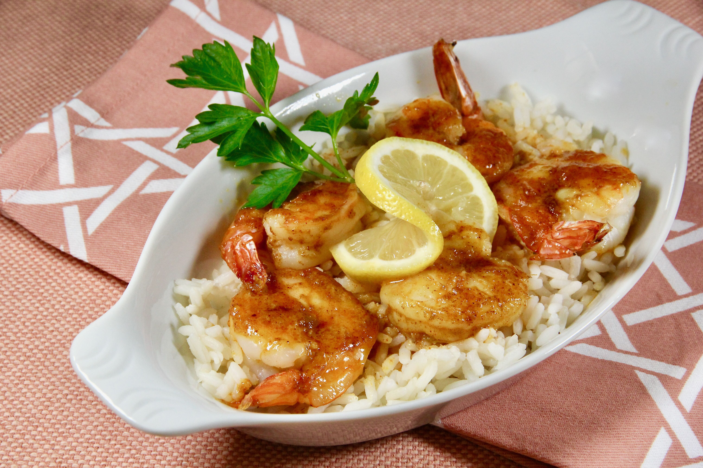

Curried Baked Shrimp

Description
This is a baked shrimp recipe with a curry and honey-mustard sauce. Great for appetizers at a party or a main dish.
140 calories; protein 18.6g; carbohydrates 3.2g; fat 5.4g; cholesterol 184.3mg; sodium 468.6mg
Ingredients
- 1 serving cooking spray (such as Pam®)
- 2 pounds large shrimp, peeled and deveined
- 3 tablespoons melted butter
- 2 tablespoons Dijon mustard
- 1 tablespoon lemon juice
- 1 tablespoon honey
- 1 teaspoon curry powder
- ½ teaspoon salt
- ½ teaspoon paprika
Steps
- Preheat the oven to 350 degrees F (175 degrees C). Spray a shallow baking dish with cooking spray.
- Layer shrimp in the bottom of the prepared pan.
- Mix butter, Dijon mustard, lemon juice, honey, curry powder, salt, and paprika together in a bowl. Pour over shrimp.
- Bake in the preheated oven until shrimp are no longer transparent, stirring twice, about 20 minutes.